OTOBO monitos iQ Connector¶
Beschreibung¶
Der monitos iQ Connector zeigt den Live-Zustand aus monitos iQ direkt am Config Item der OTOBO-CMDB — in der Detailansicht für Agenten, im Kundenportal und als farbiges Abzeichen in den Listen der CMDB.
Ein Config Item, das monitos überwacht, trägt die UUID seines monitos-Hosts im dynamischen Feld
monitosUUID. In der Regel schreibt monitos Discovery sie beim Anlegen des Config Items. Mit
dieser UUID liest das Addon aus monitos iQ und zeigt:
Monitoring — der Zustand des Hosts („Warnung seit 5,6 Std.“), seine Prüfungen, Verfügbarkeit, Störungszeit, Ausfälle und Wartungszeit eines Zeitraums, das Zertifikat, das als nächstes abläuft, anstehende Wartungsfenster und ein Link nach monitos iQ.
Statusverlauf — gestapelte Balken: wie viel jeder Stunde oder jedes Tages der Host OK, in Warnung, kritisch oder unbekannt war, Wartungen schraffiert darunter.
Zeitleiste — die Zustände des Hosts als ein Band über den Zeitraum, Wartungen darüber.
Verfügbarkeit — ein Ring mit dem Anteil jedes Zustands an der gemessenen Zeit, den OK-Anteil in der Mitte.
Ressourcen — CPU, Arbeitsspeicher und jedes Dateisystem wie in der Hostansicht von monitos: ein Balken mit Prozentwert je Ressource und ihr Verlauf über den Zeitraum. Hosts ohne Linux- oder Windows-Exporter zeigen stattdessen ihre Prüfungen zu Festplatten, Speicher und Hardware.
Zustands-Abzeichen — in der Config-Item-Übersicht und im Suchergebnis ein farbiges Abzeichen je Zeile.
Jedes dieser Elemente ist ein eigenes dynamisches Feld. Die Klassendefinition entscheidet also, welches wo erscheint. Alle folgen einem gemeinsamen Zeitraum — 24 Stunden, 7, 30 oder 90 Tage —, und ein Klick schaltet jedes Feld auf der Seite um.
Das Addon liest nur. Es legt keine Config Items an und ändert nichts in monitos.
Auf einen Blick
Zustand, Prüfungen, Kennzahlen und Wartungen eines Hosts direkt am Config Item
Statusverlauf, Zeitleiste und Verfügbarkeitsring über 24 Stunden bis 90 Tage
Auslastung von CPU, Arbeitsspeicher und Dateisystemen, gelb ab 70 %, rot ab 90 %
Ampel-Abzeichen in CMDB-Liste und Suche, ohne dass die Liste auf monitos wartet
Kundenportal mit denselben Feldern, ohne interne Details
Jedes Feld einzeln platzierbar, in einem, zwei oder drei Dritteln der Seitenbreite
Kein Core-Override, keine Änderung an bestehenden Masken
Einsatzszenarien¶
Störungsmeldung am Servicedesk. Ein Kunde meldet, dass eine Anwendung nicht erreichbar ist. Der Agent öffnet den Server in der CMDB und sieht sofort, seit wann er kritisch ist, welche Prüfung anschlägt und ob gerade eine Wartung läuft — ohne in ein zweites System zu wechseln.
Verfügbarkeit für den Kunden. Der Kunde fragt nach der Verfügbarkeit seines Systems im letzten Monat. Ring und Kennzahlen am Config Item beantworten das mit einem Klick auf 30 T, auf Wunsch auch im Kundenportal.
Volle Platten, bevor sie zum Ausfall werden. Der Administrator sieht am Server, dass eine Partition bei 89 % steht und seit Tagen wächst — gelb markiert und in der Kopfzeile genannt.
Ablösung des alten monitos-Connectors. Der bisherige SOAP-Connector wird nicht migriert; der monitos iQ Connector ersetzt ihn mit der Public API von monitos iQ.
Systemvoraussetzungen¶
Framework¶
OTOBO 11.0.x oder 11.1.x — ein Paket für beide.
Pakete¶
ITSMConfigurationManagement 11.0 oder 11.1
monitos iQ¶
monitos iQ mit der Public API v0, ein API-Benutzer mit Leserechten und — für die Anmeldung per Token — ein persönliches Zugriffstoken.
Für die Messwerte des Ressourcen-Feldes: der Linux- oder Windows-Exporter (SNClient) an den Hosts in monitos.
Das dynamische Feld
monitosUUIDan den Config Items, in der Regel befüllt durch monitos Discovery — und Teil der Klassendefinition, über die Rolle monitos ITSM-Leitstand von monitos Discovery oder eine eigene Sektion der Klasse. Ein Wert, der gespeichert, aber nicht in der Definition ist, wird nicht gelesen; das Feld zeigt dann Kein monitos-Host.
Software von Drittanbietern¶
Keine.
Überblick¶
Installation — Paket einspielen
Konfiguration — Webservice und Systemkonfiguration
Admin-Handbuch — Felder auf die Seiten einer Klasse bringen, Listenspalte, Kundenportal
Anwender-Handbuch — was die Felder zeigen und wie man sie bedient
Was die Zustände bedeuten — was die Farben und Kennzahlen bedeuten
Worauf achten — Grenzen und Besonderheiten
Referenz — Fehlerbilder und Meldungen im Protokoll
Installation¶
Das Paket wird wie jedes OTOBO-Paket über Admin → Paketverwaltung installiert. Es legt an:
fünf dynamische Felder (Objekttyp ITSMConfigItem):
monitosIQMonitoring,monitosIQStatusHistory,monitosIQTimeline,monitosIQAvailabilityundmonitosIQResources,die Config-Item-Rolle monitos iQ Monitoring mit einer Sektion je Feld,
den Webservice monitosIQConnector.
Das Paket ändert nie eine Klassendefinition. Wo die Felder erscheinen, entscheidet der Administrator (siehe Admin-Handbuch).
Konfiguration¶
Webservice¶
Bei der Installation entsteht der Webservice monitosIQConnector (Admin → Webservices). Sein Endpunkt ist ein Platzhalter — er muss gesetzt werden, sonst zeigt jedes Feld Keine aktuellen Daten. Die Einstellungen stehen unter Requester → Netzwerktransport HTTP::REST:
- Endpunkt
Die mosd-Adresse der Installation einschließlich API-Pfad, z. B.
https://monitos.example.com/mosd/api/v0. Der Pfad muss auf/api/v0enden: Das Ressourcen-Feld findet seine Messwerte daneben, unter…/mosd/private/metrics/.- Authentifizierung
Entweder ein persönliches Zugriffstoken in
monitosIQConnector::APIToken(siehe unten) — dann bleibt das Feld leer — oder Basic Auth hier am Transport.- SSL
Eine monitos-Installation mit selbstsigniertem Zertifikat braucht Verifiziert den SSL-Hostnamen und SSL Verifizierungsmodus auf Nein — oder die Datei der Zertifizierungsstelle unter Zertifikat der Certification Authority (CA).
- Timeout
10 Sekunden ab Werk. So lange wartet ein Feld, wenn monitos nicht antwortet; die Seite selbst wartet nie.

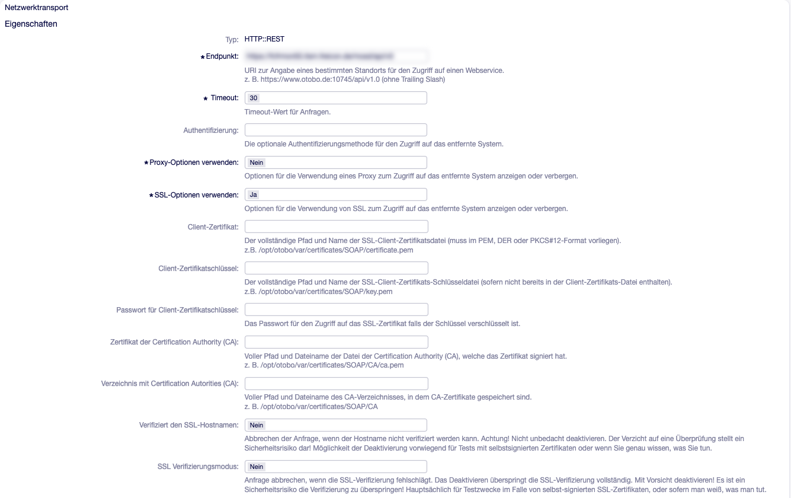
Abb. 1 Der Netzwerktransport des Webservice: Endpunkt mit API-Pfad, SSL-Prüfung für ein selbstsigniertes Zertifikat abgeschaltet, Anmeldung per Token aus der Systemkonfiguration (Authentifizierung leer).¶
Ein Update des Pakets ersetzt nur die Invoker und ihre Zuordnung. Endpunkt, Anmeldung, SSL, Proxy, Timeout, Debugger und Gültigkeit bleiben so, wie der Administrator sie gesetzt hat.
Die Verbindung lässt sich auf der Konsole prüfen:
bin/otobo.Console.pl Maint::monitosIQConnector::Check
bin/otobo.Console.pl Maint::monitosIQConnector::Check --uuid 01920000-0000-7000-8000-000000000001
Der Befehl gibt die Version von monitos und der API aus, den monitos-Benutzer der Anmeldedaten
und — mit --uuid — Zustand, Prüfungen und Zertifikate eines Hosts. Schlägt etwas fehl,
endet er mit dem Rückgabewert 1.
Systemkonfiguration¶
Die Einstellungen stehen unter Admin → Systemkonfiguration → Core → monitosIQConnector.

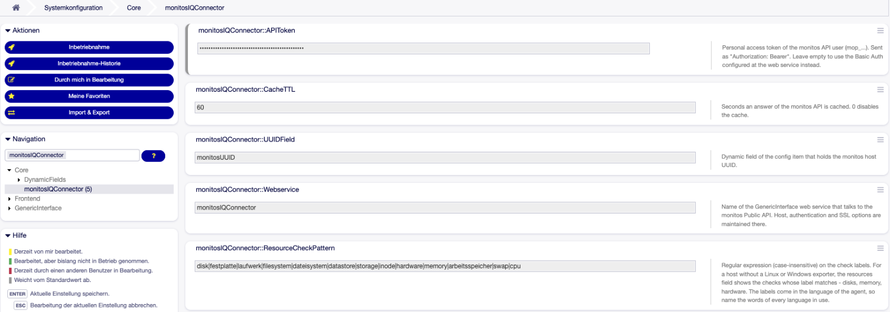
Abb. 2 Die fünf Einstellungen des Addons in der Systemkonfiguration.¶
monitosIQConnector::WebserviceStandard
monitosIQConnector. Name des Webservice, der mit monitos spricht.monitosIQConnector::APITokenStandard leer. Persönliches Zugriffstoken des monitos-API-Benutzers (
mop_…), gesendet alsAuthorization: Bearer. Leer → es gilt die Basic Auth des Webservice.monitosIQConnector::UUIDFieldStandard
monitosUUID. Dynamisches Feld des Config Items mit der UUID des monitos-Hosts.monitosIQConnector::CacheTTLStandard
60. So viele Sekunden wird eine Antwort von monitos aufbewahrt — und ebenso lange, dass monitos gerade nicht erreichbar war.0schaltet den Zwischenspeicher ab; dann fragt jeder Seitenaufruf bei monitos an.monitosIQConnector::ResourceCheckPatternRegulärer Ausdruck (Groß-/Kleinschreibung egal) auf die Namen der Prüfungen. Für einen Host ohne Exporter zeigt das Ressourcen-Feld die Prüfungen, deren Name passt. monitos liefert die Namen in der Sprache des Benutzers; der Standard nennt deshalb deutsche und englische Wörter:
disk|festplatte|laufwerk|filesystem|dateisystem|datastore|storage|inode|hardware|memory|arbeitsspeicher|swap|cpu. Ein ungültiger Ausdruck fällt auf den Standard zurück und schreibt einen Fehler ins Protokoll.
Der monitos-API-Benutzer braucht nur Leserechte. Welche Hosts er lesen darf, entscheidet, was OTOBO zeigen kann: Einen Host, den er nicht lesen darf, kann OTOBO nicht von einem Host unterscheiden, den monitos nicht kennt (siehe Worauf achten).
Admin-Handbuch¶
Wie das Addon arbeitet¶
Die Detailansicht eines Config Items wird angezeigt, ohne auf monitos zu warten — jedes Feld ist zunächst ein Platzhalter.
Der Browser fragt für jedes Feld beim Addon an. Das Addon prüft das Leserecht auf das Config Item und liest die UUID aus
monitosUUID.Steht die Antwort im Zwischenspeicher (
CacheTTL), kommt sie sofort. War monitos gerade nicht erreichbar, heißt die Antwort sofort Keine aktuellen Daten, ohne neuen Versuch.Sonst fragt das Addon über den Webservice die Public API von monitos iQ ab — Host, Prüfungen, Verfügbarkeit, Statusverlauf, Zertifikate.
Listen warten ebenso wenig. Stehen die Zustände aller Hosts im Zwischenspeicher, erscheinen die Abzeichen sofort; sonst bekommt jede Zelle ein graues Lade-Abzeichen, und der Browser holt alle Abzeichen der Seite in einer Anfrage nach.
Die Ressourcen nehmen einen Nebenweg. CPU, Arbeitsspeicher und Dateisysteme sind nicht Teil
der Public API. Das Addon liest sie dort, wo die Oberfläche von monitos sie selbst liest —
unter /mosd/private/metrics/…, neben /mosd/api/v0. Endpunkt, Anmeldung, SSL, Proxy und
Timeout kommen aus demselben Webservice; es ist nichts doppelt einzurichten. Diese Abfragen
erscheinen nicht im Debugger des Webservice, Fehler stehen im Systemprotokoll.
Aufwand je Seite. Der Monitoring-Block fragt viermal bei monitos an (Host, Prüfungen,
Verfügbarkeit, Zertifikate). Zeitleiste und Ring nutzen die Antworten des Blocks bzw. des
Statusverlaufs mit, das Ressourcen-Feld fragt für einen Host mit Exporter sechsmal an, für einen
ohne gar nicht. Danach antwortet für CacheTTL Sekunden der Zwischenspeicher.
Zeitraum. Der Zeitraum ist eine Benutzereinstellung (Standard 30 Tage). Ein Klick auf 24 h / 7 T / 30 T / 90 T speichert ihn und lädt jedes Feld der Seite neu; die nächste Seite öffnet mit ihm. Agenten und Kundenbenutzer haben jeweils ihren eigenen.
Felder und Rolle¶
Feld |
Typ |
Sektion der Rolle |
Gedacht für |
|---|---|---|---|
|
|
Monitoring |
1/3, 2/3, 3/3 — auch die Listenspalte |
|
|
Status history |
2/3, 3/3 (1/3 geht, 90 Balken werden eng) |
|
|
Timeline |
1/3, 2/3, 3/3 |
|
|
Availability |
1/3, 2/3 — über die ganze Zeile kommt eine Spalte mit Zahlen dazu |
|
|
Resources |
1/3, 2/3, 3/3 — die Darstellung folgt der Breite |
Die Felder speichern nichts und erzeugen nie eine neue Version oder einen Historieneintrag. In der Bearbeiten-Maske zeigen sie nur einen Hinweis.
Die Rolle monitos iQ Monitoring (Admin → Config Item → Rollendefinition) sagt nur, welches Feld in welcher Sektion steht. So legt das Paket sie an:
---
Sections:
Availability:
Content:
- DF: monitosIQAvailability
Monitoring:
Content:
- DF: monitosIQMonitoring
Resources:
Content:
- DF: monitosIQResources
Status history:
Content:
- DF: monitosIQStatusHistory
Timeline:
Content:
- DF: monitosIQTimeline
Ein Update ergänzt neue Sektionen (wie Resources) nur, solange die Rolle noch genau so ist, wie eine frühere Paketversion sie geschrieben hat. Eine vom Administrator geänderte Rolle bleibt unangetastet; das Protokoll nennt dann das fehlende Feld, und die Sektion lässt sich von Hand ergänzen.
Monitoring in eine Klasse einbauen¶
Die Klasse (Admin → Config Item → Klassendefinition, z. B. Server) nennt die Rolle unter
Roles und setzt ihre Sektionen als <Rolle>::<Sektion> auf eine Seite. Eine Klasse im
Betrieb hat schon eigene Seiten, Sektionen und Rollen — oft ein Dutzend. Es kommen genau zwei
Dinge dazu; sonst ändert sich nichts.
Einen Eintrag unter
Rolesergänzen. Ans Ende der Definition scrollen, alle vorhandenen Rollen genau so lassen und diesen Eintrag unter dem letzten anfügen — mit derselben Einrückung wie die anderen Rollennamen (zwei Leerzeichen):monitos iQ Monitoring: Name: monitos iQ Monitoring
Den
Roles-Block nicht durch ein Beispiel ersetzen: Jede gestrichene Rolle nimmt ihre Sektionen mit, und das Speichern scheitert mit The following sections are used in pages, but are not defined: ….Die Klasse braucht außerdem das Feld
monitosUUID. Eine Klasse, die monitos Discovery befüllt, hat es bereits (Rolle monitos ITSM-Leitstand oder eine eigene).Die Sektionen auf eine Seite setzen. Die Seite wählen (meist die erste, Summary), den letzten Eintrag unter ihrem
Contentsuchen und die Einträge darunter anfügen. Jeder Eintrag beginnt mit- Section:, der Bindestrich steht in derselben Spalte wie die Bindestriche darüber:- Section: monitos iQ Monitoring::Monitoring RowStart: 6 ColumnStart: 1 ColumnSpan: 2 - Section: monitos iQ Monitoring::Availability RowStart: 6 ColumnStart: 3 - Section: monitos iQ Monitoring::Status history RowStart: 7 ColumnStart: 1 ColumnSpan: 3 - Section: monitos iQ Monitoring::Timeline RowStart: 8 ColumnStart: 1 ColumnSpan: 3 - Section: monitos iQ Monitoring::Resources RowStart: 9 ColumnStart: 1 ColumnSpan: 3
RowStartan die Seite anpassen: das höchste schon verwendeteRowStartsuchen (plus seinRowSpan, falls vorhanden) und eine Zeile darunter beginnen. Die Zahlen oben passen zu einer Seite, deren letzte Zeile 5 ist. Zwei Sektionen in derselben Zelle überlagern sich.ColumnSpanbestimmt die Breite: 1 = ein Drittel, 2 = zwei Drittel, 3 = die ganze Zeile einer dreispaltigen Seite. DasLayoutder Seite braucht dafürColumns: 3.Einrückung prüfen, dann speichern. Scheitert das Speichern, ist nichts verändert: die Definition korrigieren und erneut speichern oder mit Abbrechen verlassen.
Weitere Regeln:
Rolesist eine Zuordnung — Schlüssel undNamesind der Name der Rolle. Eine Liste (- monitos iQ Monitoring) wird beim Speichern abgelehnt (Key Roles is not a Hash).Der Teil vor
::ist der Schlüssel unterRoles, der Teil danach der Name der Sektion in dieser Rolle. Beides unterscheidet Groß- und Kleinschreibung.Eine Sektion erscheint nur dort, wo eine Seite sie nennt; die Rolle allein zeigt nichts.
InterfacesmitCustomerbringt die Seite — und ihre Felder — ins Kundenportal.Es müssen nicht alle Felder sein: Eine Klasse kann auch nur den Block zeigen oder nur Ring und Zeitleiste.
Der Editor und die Einrückung. YAML trägt seine Struktur in den führenden Leerzeichen, und der Editor der Klassendefinition kennt keine YAML-Einrückung:
Einfügen setzt den Text so ein, wie er ist — aber die erste Zeile landet dort, wo der Cursor steht. Nach Enter steht der Cursor schon eingerückt, die erste eingefügte Zeile bekommt ihre Leerzeichen also zusätzlich. Den Cursor vor dem Einfügen an den Anfang einer leeren Zeile setzen (Pos1) und danach die erste Zeile mit den folgenden vergleichen.
Text aus Teams, Outlook oder einem Chat verliert unterwegs oft seine führenden Leerzeichen — aus diesem Handbuch kopieren oder jede Zeile nach dem Einfügen prüfen.
Nie die Schaltfläche Auto Indent Code (oder Strg+Alt+I) auf eine Klassendefinition anwenden: Sie gibt jeder Zeile die Einrückung der vorigen, die Definition wird flach und unbrauchbar. Ist es passiert: Abbrechen und die Klasse neu öffnen.
Tab fügt zwei Leerzeichen ein — genau die Schrittweite der Definition.
Wenn das Speichern abgelehnt wird. Die Meldung nennt das Problem; „page 0“ ist die erste Seite.
- A section in page N is missing the key ‚Section‘ …
Ein Eintrag unter
Contenthat keineSection:-Zeile — meist ist sie beim Einfügen in eine andere Einrückung gerutscht. Jeder Eintrag ist eine Zeile- Section: …plus seineRowStart/ColumnStart/ColumnSpan-Zeilen, zwei Leerzeichen rechts vom Bindestrich.- The following sections are used in pages, but are not defined: X::Y, …
Es gibt keinen Schlüssel
XunterRoles— meist, weil derRoles-Block ersetzt statt ergänzt wurde — oder die RolleXhat keine SektionY(Schreibweise).- The role X was not found.
Der
NameunterRolespasst zu keiner Rolle unter Rollendefinition.- Key Roles is not a Hash.
Roleswurde als Liste geschrieben.- Dynamic field X is used in section Y, but does not exist in the system.
Das Paket ist nicht vollständig installiert oder das Feld wurde gelöscht bzw. ungültig gesetzt — Paket neu installieren, Admin → Dynamische Felder prüfen.
Listenspalte¶
DynamicField_monitosIQMonitoring in die Spalten der Config-Item-Übersicht aufnehmen, dann
trägt jede Zeile ein Zustands-Abzeichen — je Klasse in
ITSMConfigItem::Frontend::AgentITSMConfigItem###ClassColumnsDefault (standardmäßig sichtbar)
oder ###ClassColumnsAvailable (vom Agenten wählbar), für das Kundenportal in
Customer::ConfigItem::PermissionConditionColumns###….

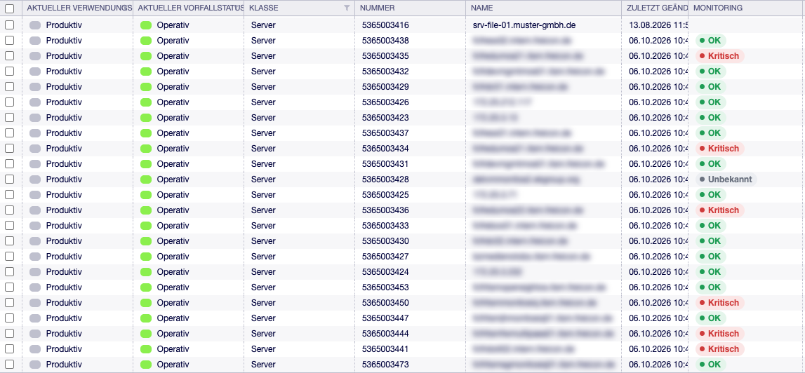
Abb. 3 Die Spalte Monitoring in der Übersicht der Klasse Server: ein Abzeichen je Host, leer bei Config Items ohne monitos-Host.¶
Kundenportal¶
Kunden sehen dieselben Felder mit weniger Details: keine Prüfliste (der Text einer Prüfung kann interne Namen und Adressen enthalten) und keinen Link nach monitos. Das Ressourcen-Feld zeigt Kunden dieselben Balken und Kurven; für einen Host ohne Exporter nennt es die Prüfungen mit ihrem Zustand, aber ohne ihren Text.
Ein Kundenbenutzer bekommt nur Daten zu Config Items, die die Kundenberechtigung des Kerns
erlaubt (Customer::ConfigItem::PermissionConditions###…), und die Config-Item-Module des
Kundenportals müssen aktiv sein (CustomerFrontend::Module###CustomerITSMConfigItem,
…Search, …Zoom). Ohne passende Berechtigung sieht die Antwort aus wie für ein Config Item,
das es nicht gibt.
Anwender-Handbuch¶
Für Agenten gibt es nichts einzurichten. Die Felder erscheinen in der Detailansicht eines Config Items dort, wo die Klasse sie platziert, und laden sich nach dem Aufbau der Seite selbst.
Kopf- und Fußzeile¶
Jedes Feld hat dieselbe Kopfzeile: den Titel, rechts die Zeitraum-Schaltflächen 24 h · 7 T · 30 T · 90 T und das Symbol zum Aktualisieren. Ein Klick auf einen Zeitraum schaltet alle Felder der Seite um und gilt auch für die nächsten Seiten. Aktualisieren liest die Daten neu aus monitos, auch wenn eine Antwort im Zwischenspeicher steht.
Jedes Feld endet mit derselben Fußzeile: links die Uhrzeit, zu der monitos gelesen wurde („Stand 11:30“), rechts der Link In monitos iQ öffnen, der den Host direkt in monitos öffnet. Kunden sehen nur die Uhrzeit.
Monitoring¶
Der Block nennt oben den Zustand des Hosts und seit wann er gilt, daneben, wie viele Prüfungen ein Problem haben. Darunter stehen vier Kennzahlen für den Zeitraum — Verfügbarkeit, Störung, Ausfälle und In Wartung —, das Zertifikat, das als nächstes abläuft, und geplante Wartungen. Ein Zeiger auf eine Kennzahl erklärt, wie sie gerechnet wird.
Bei zwei Dritteln und über die ganze Zeile stehen die Prüfungen neben den Kennzahlen, die schlimmste zuerst, mit ihrem Text; die Liste rollt, statt den Block zu strecken:

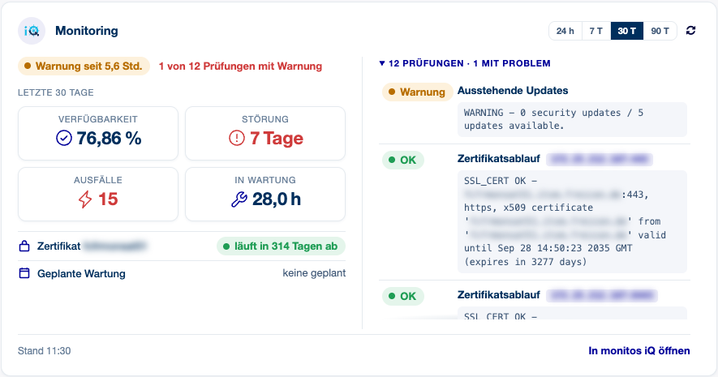
Abb. 4 Der Monitoring-Block bei zwei Dritteln: eine Prüfung in Warnung oben in der Liste, die Kennzahlen der letzten 30 Tage links.¶
Bei einem Drittel stehen die Kennzahlen zu zweit nebeneinander, die Prüfungen sind eingeklappt — die Zeile darüber sagt, wie viele ein Problem haben:

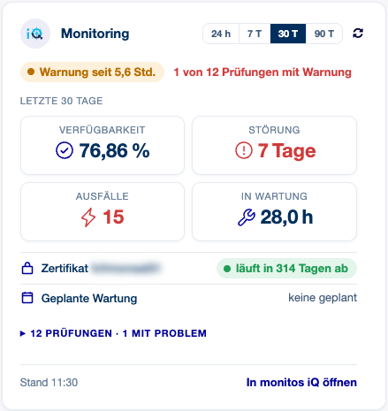
Abb. 5 Der Monitoring-Block bei einem Drittel.¶
Statusverlauf¶
Gestapelte Balken über den Zeitraum: je Stunde (24 Stunden), je sechs Stunden (7 Tage) oder je Tag (30 und 90 Tage), wie viel davon der Host OK, in Warnung, kritisch oder unbekannt war. Wartungen sind unter den Balken schraffiert. Der Zeiger auf einen Balken nennt die Zeiten.

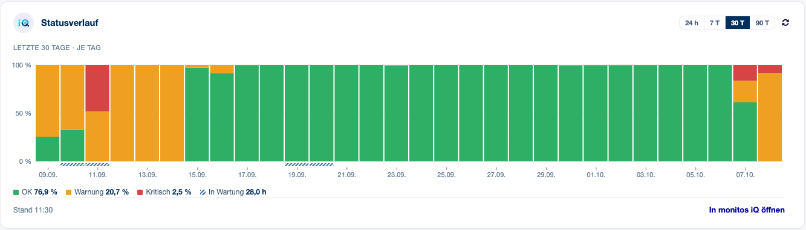
Abb. 6 Der Statusverlauf über 30 Tage: Warnungen in der ersten Woche, ein kritischer Tag, zwei Wartungen.¶
Zeitleiste¶
Die Zustände als ein Band über den Zeitraum, Wartungen darüber schraffiert, die Zahl der Ausfälle in der Legende. Der Zeiger auf einen Abschnitt nennt Beginn, Ende und Dauer.

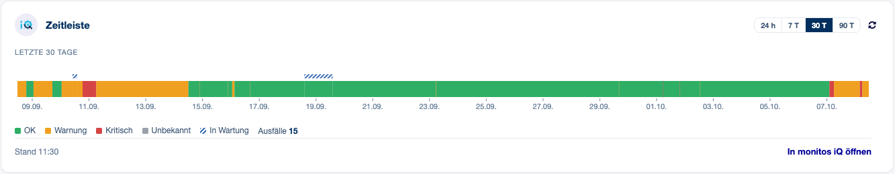
Abb. 7 Die Zeitleiste desselben Hosts.¶
Verfügbarkeit¶
Der Ring zeigt den Anteil jedes Zustands an der gemessenen Zeit, den OK-Anteil in der Mitte. Ab zwei Dritteln stehen die Legende mit den Dauern und eine Spalte mit Zahlen daneben: Tage mit Störung, schlechtester Tag, Wartungszeit.

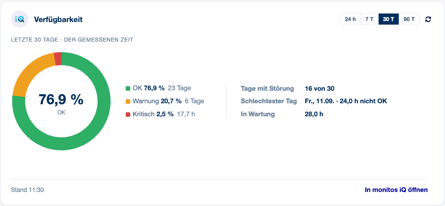
Abb. 8 Der Verfügbarkeitsring bei zwei Dritteln.¶
Bei einem Drittel steht die Legende unter dem Ring:

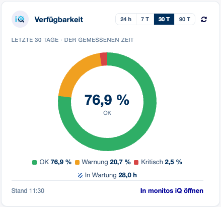
Abb. 9 Der Verfügbarkeitsring bei einem Drittel.¶
Ressourcen¶
CPU, Arbeitsspeicher und jedes Dateisystem, jeweils als Balken aus 20 Segmenten mit Prozentwert: grün unter 70 %, gelb ab 70 %, rot ab 90 % — die Schwellen, die monitos in seiner eigenen Ansicht verwendet. Die Zeile über den Balken nennt Betriebssystem und Laufzeit des Hosts und, sobald eine Ressource über 70 % liegt, die, die ihrer Grenze am nächsten ist. Die Darstellung folgt der Breite:
ganze Zeile — Balken links, drei Diagramme daneben: CPU, Arbeitsspeicher, Dateisysteme über den Zeitraum. Die Achse reicht fest von 0 bis 100 %, die beiden Schwellen sind gestrichelt — so sieht 8 % CPU nicht nach einem Alarm aus. Der Zeiger nennt die Werte zu diesem Zeitpunkt.
zwei Drittel — die Balken über die volle Breite, die drei Diagramme darunter.
ein Drittel — eine Zeile je Ressource mit Balken, Prozentwert und dem Verlauf als dünne Linie; der Zeiger darauf nennt den niedrigsten und den höchsten Wert des Zeitraums.
unter 380 Pixel (schmales Fenster, Kundenportal am Telefon) — nur Balken und Prozentwert.

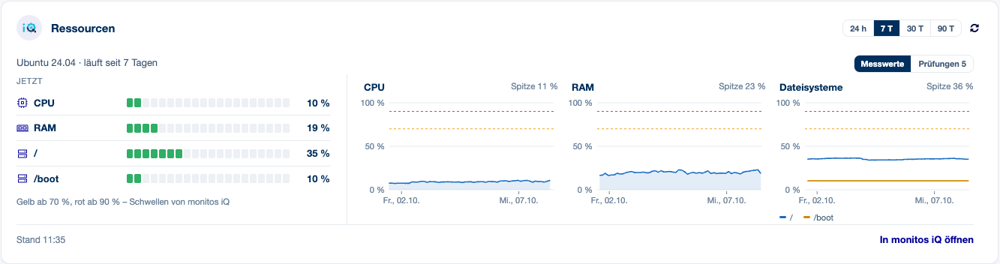
Abb. 10 Die Ressourcen über die ganze Zeile, Zeitraum 7 Tage.¶

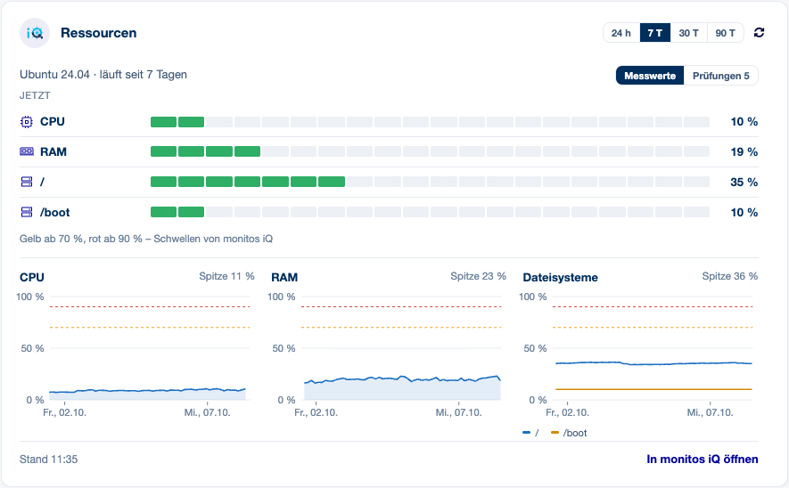
Abb. 11 Bei zwei Dritteln rücken die Diagramme unter die Balken.¶

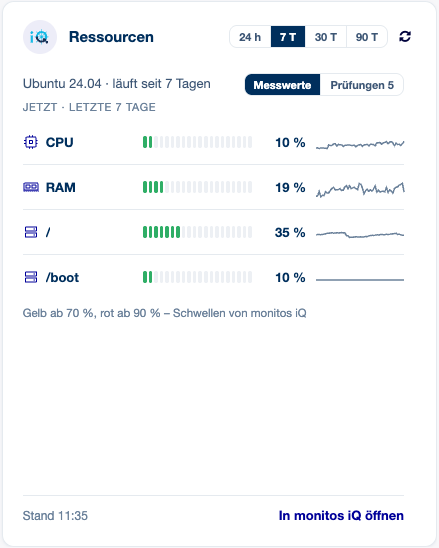
Abb. 12 Bei einem Drittel trägt jede Zeile ihren Verlauf als Linie.¶
Messwerte oder Prüfungen. Rechts über den Balken schaltet Messwerte | Prüfungen n das Feld auf die Prüfungen des Hosts zu Festplatten, Speicher und Hardware um — mit ihrem Text für Agenten. Die Messwerte sind der Standard; die Wahl gilt, solange die Seite offen ist. Hat eine der Prüfungen ein Problem, während sie ausgeblendet sind, trägt der Schalter einen Punkt in der Farbe der schlimmsten (gelb für Warnung, rot für kritisch).

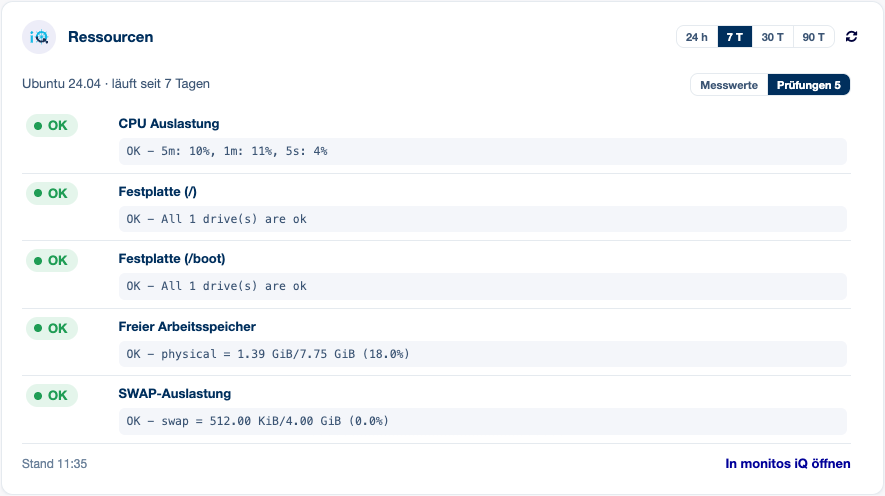
Abb. 13 Dasselbe Feld nach einem Klick auf Prüfungen.¶
Hosts ohne Exporter. Messwerte gibt es nur für Hosts mit dem Linux- oder Windows-Exporter (SNClient) in monitos. Ob ein Host einen hat, zeigt monitos selbst: Seine Hostansicht trägt neben dem Betriebssystem das Abzeichen Linux Exporter (SNClient) bzw. Windows Exporter. Für alle anderen Hosts — die meisten Netzwerkgeräte und alle, die nur über Prüfungen überwacht werden — sagt das Feld das und zeigt die passenden Prüfungen, die schlimmste zuerst:

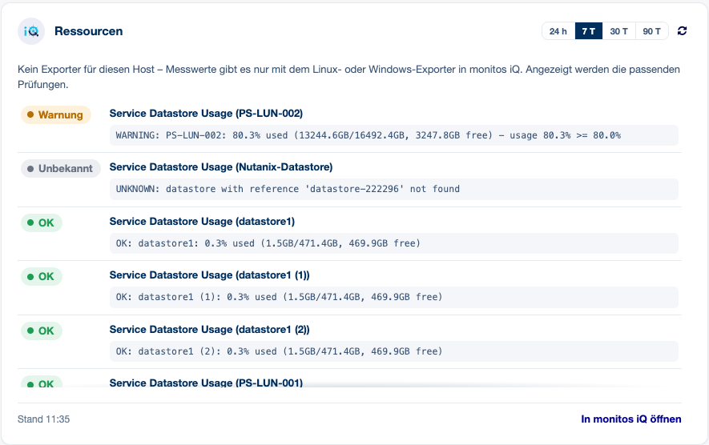
Abb. 14 Ein vCenter ohne Exporter: seine Datastore-Prüfungen, eine davon in Warnung bei 80 % Belegung.¶
Zustände in Listen¶
In der Config-Item-Übersicht und im Suchergebnis trägt die Spalte Monitoring ein Abzeichen je Zeile (siehe Admin-Handbuch, Listenspalte). Ein Sternchen hinter dem Abzeichen heißt: quittiert oder in Wartung. Der Zeiger auf das Abzeichen sagt, welches von beiden.
Was die Zustände bedeuten¶
Angezeigt |
monitos-Code |
Bedeutung |
|---|---|---|
OK |
0 |
Host und Prüfungen in Ordnung |
Warnung |
1 |
mindestens eine Prüfung warnt |
Kritisch |
2 |
mindestens eine Prüfung ist kritisch bzw. der Host ist nicht erreichbar |
Unbekannt |
3 |
monitos hat einen Zustand, kann ihn aber nicht bewerten |
Nicht gemessen (Diagramme) / Warten (Prüfungen) |
4 |
noch keine Messung — bevor der Host angelegt wurde, oder eine neue Prüfung |
|
— |
monitos antwortet für die UUID mit 403/404 |
|
— |
monitos konnte nicht gelesen werden |
Die Kennzahlen des Monitoring-Blocks:
Verfügbarkeit — Anteil von OK an der gemessenen Zeit des Zeitraums.
Störung — gesamte Zeit nicht OK (Warnung, kritisch, unbekannt), Wartungszeit eingeschlossen.
Ausfälle — wie oft der Host außerhalb von Wartungen OK verlassen hat; aufeinanderfolgende Problemzustände zählen als einer. „≥ n“, wenn monitos nur einen Teil des Zeitraums geliefert hat.
In Wartung — Zeit in geplanten Wartungsfenstern.
Zeitleiste und Ring zählen Probleme nach derselben Regel; die Zahlen einer Seite passen zueinander. Tage, bevor monitos den Host gemessen hat, erscheinen grau als „nicht gemessen“ und zählen nicht in die Verfügbarkeit.
Worauf achten¶
Nur Anzeige. Abgesehen vom Ressourcen-Feld liefert die Public API Zustände über die Zeit, keine Messwerte — Diagramme von Antwortzeiten oder Prüfwerten gibt es nicht.
Die Ressourcen kommen aus einer internen Schnittstelle von monitos. Die Messwerte stammen aus der Schnittstelle, die die Oberfläche von monitos selbst verwendet. Sie ist nicht Teil der veröffentlichten API und kann sich mit einer neuen monitos-Version ändern. Fehlt sie, zeigt das Ressourcen-Feld die Prüfungen oder Keine aktuellen Daten — die anderen Felder sind davon nicht berührt.
Messwerte nur mit Exporter. CPU, Arbeitsspeicher und Dateisysteme gibt es nur für Hosts mit Linux- oder Windows-Exporter. Die Schwellen (70 %, 90 %) sendet monitos; sie gelten für jeden Host gleich. Ein Verlauf beginnt erst, seit monitos den Exporter abfragt.
Unbekannt und nicht erlaubt sehen gleich aus. monitos antwortet auf einen unbekannten Host und auf einen, den der API-Benutzer nicht lesen darf, gleichermaßen mit 403 — das Addon ebenso.
Prüfungen, die schlimmste zuerst. Kritisch, Warnung, unbekannt, wartend, OK; innerhalb eines Zustands in der Reihenfolge von monitos.
Alte Versionen. Die Detailansicht einer älteren Version eines Config Items zeigt den Host der aktuellen Version.
Die Hostliste wird ganz gelesen. Für die Abzeichen liest das Addon den Zustand aller Hosts, die der API-Benutzer sehen darf, 500 je Anfrage. Bei vielen tausend Hosts dauert die erste Listenansicht nach Ablauf des Zwischenspeichers ein paar Anfragen länger — im Hintergrund, nicht in der Seite.
Link nach monitos. Er braucht core.public_url in monitos; ohne diese Einstellung sendet
monitos keinen Link, und das Feld zeigt keinen. Verwendet werden nur http(s)-Adressen.
Übersetzung. Deutsch. Andere Sprachen zeigen die englischen Texte.
Referenz¶
Wenn etwas nicht stimmt¶
monitos antwortet nicht. Nichts auf der Seite wartet: Die Felder zeigen Keine aktuellen
Daten, die Listen-Abzeichen ?. Die erste fehlgeschlagene Anfrage merkt sich „monitos nicht
erreichbar“ für CacheTTL Sekunden; bis dahin fragt kein Feld erneut, und das Protokoll
bekommt eine Zeile statt einer je Seitenaufruf. Aktualisieren fragt trotzdem an und löscht
den Vermerk, wenn monitos antwortet.
Der Host zeigt Daten nicht abrufbar. monitos hat mit 403 oder 404 geantwortet: Die UUID ist
unbekannt oder der API-Benutzer darf den Host nicht lesen. Typische Ursache: Der Host wurde in
monitos entfernt und neu angelegt, die UUID in monitosUUID ist veraltet.
Das Feld zeigt Kein monitos-Host. monitosUUID ist am Config Item leer — oder das Feld
ist nicht Teil der Klassendefinition (Rolle monitos ITSM-Leitstand fehlt in der Klasse).
Ein Feld lädt ohne Ende. Die Anfrage des Browsers selbst ist gescheitert (Netz, Proxy, Serverfehler); OTOBO zeigt seinen eigenen Hinweis, und das Feld wechselt auf Keine aktuellen Daten. Ein Listen-Abzeichen, das in einem Dashboard-Widget grau bleibt, heißt: Die Seite des Widgets lädt das Skript des Addons nicht (es wird für Übersicht, Suche und Detailansicht geladen).
Das Ressourcen-Feld zeigt Prüfungen statt Balken. monitos hat für den Host keinen Linux- oder Windows-Exporter. Es zeigt Balken, aber den Hinweis „Exporter: letzte Daten …“. monitos konnte den Exporter zuletzt nicht abfragen; die Balken zeigen die letzten Werte, die es hat.
Meldungen im Protokoll¶
Alle Meldungen beginnen mit monitosIQConnector:. Für die Rohdaten der Anfragen den Debugger
des Webservice auf debug stellen (Admin → Webservices → Debugger); die Abfragen des
Ressourcen-Feldes erscheinen dort nicht.
HostGet: …,HostList: …oder ein anderer Invoker-Name mit dem Fehlertext des Transportsmonitos nicht erreichbar, Zeitüberschreitung, TLS-Problem, falscher Endpunkt — setzt „monitos nicht erreichbar“.
Web service "monitosIQConnector" not found or invalid.Webservice gelöscht, umbenannt oder ungültig;
monitosIQConnector::Webserviceprüfen.Need a valid UUID, got "…".monitosUUIDenthält keine UUID (Tippfehler, Leerzeichen).metrics/<Pfad>: <Statuszeile>Das Ressourcen-Feld hat monitos nicht erreicht — setzt „monitos nicht erreichbar“ wie ein Invoker-Fehler.
metrics/<Pfad>: response code <n>.monitos hat die Messwert-Schnittstelle mit einem Fehler beantwortet.
metrics/<Pfad>: answer is not JSON.Ein Proxy oder eine Anmeldeseite hat statt monitos geantwortet.
Host of the web service must end in /api/v0 to find the metrics endpoints, got "…".Der Endpunkt des Webservice zeigt nicht auf die Public API.
ResourceCheckPattern "…" is no valid regular expression, using the default.monitosIQConnector::ResourceCheckPatternkorrigieren.Web service monitosIQConnector created - set its host and credentials.Hinweis nach der Installation.
Invokers of web service monitosIQConnector updated, host and credentials kept.Hinweis nach einem Update.
Role 'monitos iQ Monitoring' was changed by an admin and is kept. …Hinweis nach einem Update — die Sektion Resources von Hand ergänzen (siehe Felder und Rolle).
Could not create …/Could not set the definition of role '…'.Installation oder Update konnten Webservice, Feld oder Rolle nicht anlegen; nach Beheben der Ursache Neu installieren.